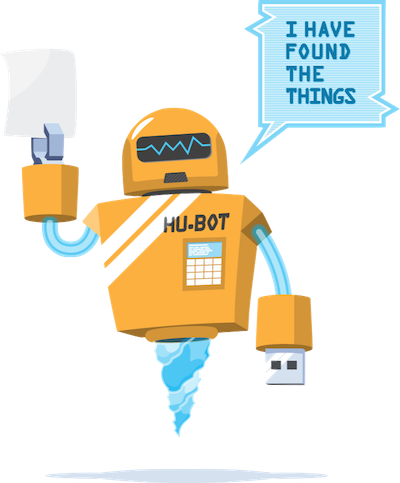
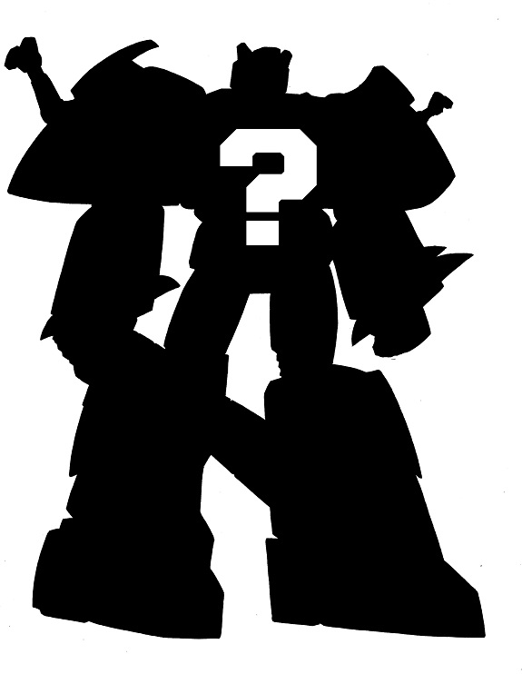

ChatOps
Panel
Friday, April 24th @ 1:35 p.m.
ChatOps: An approach to communication that allows teams to collaborate and manage not only aspects of their infrastructure and code, but a wide variety of functions within an organization, all from the comfort and safety of a chat room.
By automating tasks and actions so that a chatbot can execute them on your behalf, ChatOps allows you to create effeciencies in many areas of an organization, freeing up time and resources to tackle new challenges.
Additionally, by automating tasks that can be triggered safely from a bot within a chat room, bottlenecks are removed where previously only a limited subset of people had the knowledge or access to expertly manage infrastructure, code, and information.
- Source: "ChatOps For Dummies" by: Jason Hand
ChatBot Panelists
 t t |
 |
||
| Josh Nichols | Guilluame Binet | Jimmy Cuadra | Dave Josephsen |
| Hubot | ErrBot | Lita | Lazlo |
|  |  |
 |